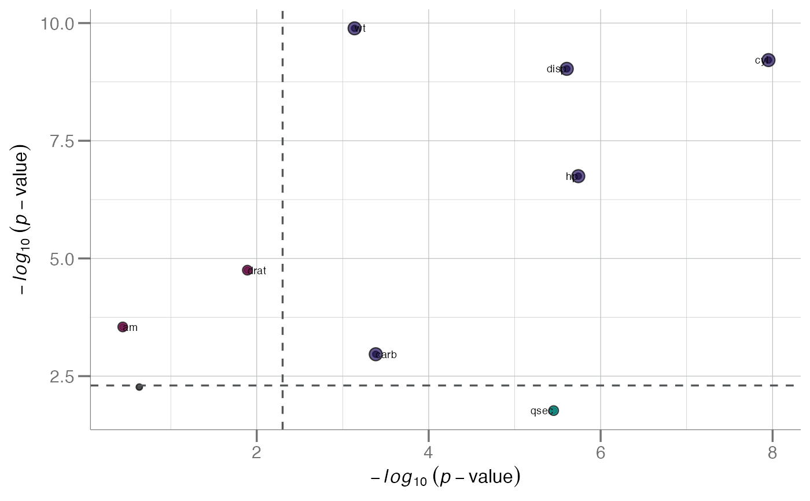

Contrast 2 Univariate Tables
plot_uni_contrasts.RdCompare 2 univariate tables from any two analyses
from the calc_univariate() function.
Usage
plot_uni_contrasts(
x,
y,
cutoff = 0.05/nrow(x),
ident = FALSE,
label_size = 2.5
)Examples
a <- calc_univariate(mtcars, var = "vs")
b <- calc_univariate(mtcars, var = "mpg", "lm")
plot_uni_contrasts(a, b, ident = TRUE, cutoff = 0.005)
